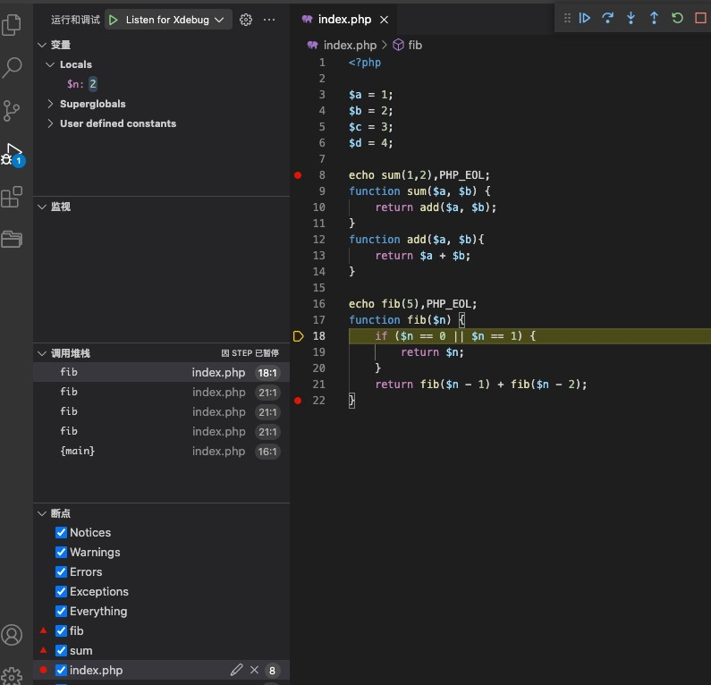
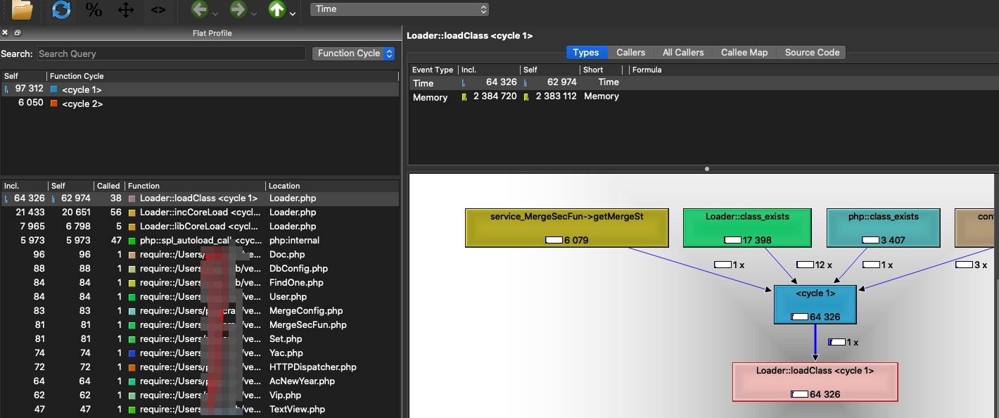
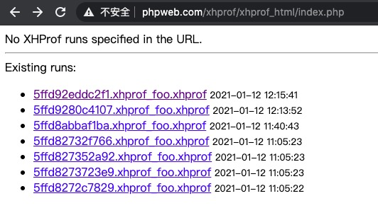
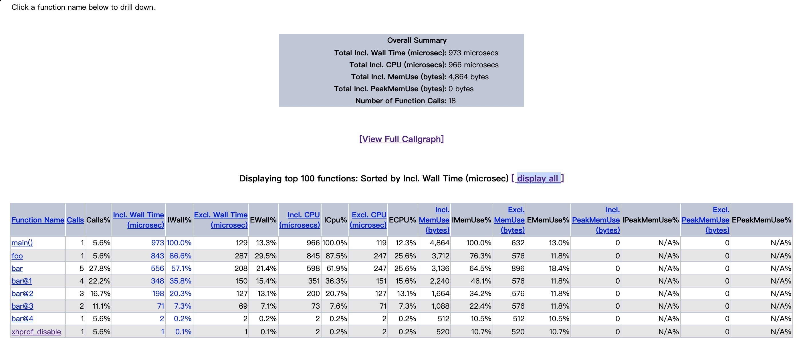

性能分析是衡量应用程序在代码级别的相对性能，性能分析将捕捉的事件包括：CPU的使用，内存的使用，函数的调用时长和次数，以及调用图等。另外，性能分析的行为本身也会影响应用性能。
一、程序调试
使用xdebug：作为全世界最好的开发语言，基本上使用echo、print_r()、var_dump()等就可以完成各种开发工作了。不过既然作为一门编程语言，肯定少不了断点调试，xdebug功能之一便是提供断点调试，此处仅以vs code为例。
安装xdebug【php7.3】
下载php对应版本(本人php7.3，下载2.8.0)
解压
tar -zxvf xdebug-2.8.0.tgzcd xdebug-2.8.0
sudo /usr/local/php/7.3/bin/phpize
sudo ./configure –with-php-config=/usr/local/php/7.3/bin/php-config
sudo make && sudo make install
修改php.ini，
zend_extension=/path/xdebug.so- 注意此处写的是zend_extension，不能写extension，否则
PHP Warning: Xdebug MUST be loaded as a Zend extension in Unknown...
- 注意此处写的是zend_extension，不能写extension，否则
通过脚本
phpinfo();或命令查看php -m1
2[Zend Modules]
Xdebug继续修改php.ini，加入以下内容：
- 网上各种各样的配置都有，最准确的配置为通过
phpinfo()查看xdebug模块下的配置 - 官方配置
1
2
3
4
5
6
7
8
9
10
11
12
13
14
15
16
17
18
19
20
21
22
23
24
25
26
27
28
29
30zend_extension=xdebug.so
zend_debugger.allow_hosts=127.0.0.1
zend_debugger.expose_remotely=always
zend_debugger.httpd_uid=-1
xdebug.collect_params = on
xdebug.collect_return = on
#profile
xdebug.auto_profile = on
xdebug.profiler_enable = 1
xdebug.profiler_output_dir=your path #自定义路径
xdebug.profiler_output_name=cachegrind.out.%s
;xdebug.profiler_enable_trigger=on
#trace
xdebug.auto_trace = on
xdebug.show_exception_trace = on
xdebug.trace_format = 1
xdebug.trace_output_dir = your path #自定义路径
xdebug.trace_output_name = trace.%c.%p
xdebug.show_local_vars = 0
xdebug.dump.POST = *
xdebug.dump.COOKIE = *
xdebug.dump.SESSION = *
xdebug.var_display_max_data = 4056
xdebug.var_display_max_depth = 5
xdebug.remote_enable=on
xdebug.remote_handler=dbgp
xdebug.remote_host=127.0.0.1
xdebug.remote_port=9010 #不能用9000，php-fpm默认监听端口
xdebug.remote_autostart=1
xdebug.cli_color=1- 网上各种各样的配置都有，最准确的配置为通过
重启php-fpm进程
-
安装PHP Debug插件，直接在商店搜索安装即可
Mac下
fn+f5开启调试，默认会提示创建launch.json1
2
3
4
5
6
7
8
9
10
11
12
13
14
15
16
17
18
19
20
21
22
23
24
25
26
27
28
29
30
31
32
33
34
35
36
37
38
39
40
41
42
43
44
45{
"version": "0.2.0",
"configurations": [
{
"name": "Listen for Xdebug",
"type": "php",
"request": "launch",
"port": 9010 //和xdebug.remote_port保持一致
},
{
"name": "Launch currently open script",
"type": "php",
"request": "launch",
"program": "${file}",
"cwd": "${fileDirname}",
"port": 9010,//和xdebug.remote_port保持一致
"runtimeArgs": [
"-dxdebug.start_with_request=yes"
],
"env": {
"XDEBUG_MODE": "debug,develop",
"XDEBUG_CONFIG": "client_port=${port}"
}
},
{
"name": "Launch Built-in web server",
"type": "php",
"request": "launch",
"runtimeArgs": [
"-dxdebug.mode=debug",
"-dxdebug.start_with_request=yes",
"-S",
"localhost:0"
],
"program": "",
"cwd": "${workspaceRoot}",
"port": 9010,
"serverReadyAction": {
"pattern": "Development Server \\(http://localhost:([0-9]+)\\) started",
"uriFormat": "http://localhost:%s",
"action": "openExternally"
}
}
]
}
编写代码
index.php1
2
3
4
5
6
7
8
9
10
11
12
13<?php
$a = 1;
$b = 2;
$c = 3;
$d = 4;
echo sum(1,2),PHP_EOL;
function sum($a, $b) {
return add($a, $b);
}
function add($a, $b){
return $a + $b;
}设置断点，如
echo sum(1,2),PHP_EOL;前请求
/usr/local/php/7.1/bin/php index.php
debug_print_backtrace()和debug_backtrace()
二、性能分析
使用xdebug
修改php.ini
1
2
3
4
5
6#profile
xdebug.auto_profile = on
xdebug.profiler_enable = 1
xdebug.profiler_output_dir=your path #自定义路径
xdebug.profiler_output_name=cachegrind.out.%s
;xdebug.profiler_enable_trigger=on安装图形化工具
qcachegrind- brew install graphviz
- brew install qcachegrind
- csrutil disable
- sudo mount -uw /
- sudo ln -s /usr/local/bin/dot /usr/bin/dot
- csrutil enable
启动qcachegrind或直接命令行使用

使用xhprof(需要自己集成到框架内部)
安装xhprof扩展(依赖哪些扩展依次安装即可)
- cd /usr/local/src
- wget https://pecl.php.net/get/xhprof-2.3.5.tgz
- tar -zxvf xhprof-2.3.5.tgz
- cd xhprof-2.3.5/extension
- /usr/local/php/7.3/bin/phpize
- ./configure –with-php-config=/usr/local/php/7.3/bin/php-config
- sudo make && sudo make install
- vim /usr/local/php/7.3/php.ini
1
2
3
4extension_dir = "/usr/local/php/7.3/lib/php/extensions/no-debug-non-zts-20160303/"
extendion = xhprof.so
#可选项，主要存放每次运行生成的文件，默认在`/var/tmp/`目录下
xhprof.output_dir = "自定义目录"- 重启php-fpm
使用
- git clone https://github.com/longxinH/xhprof.git
- 配置nginx.conf，加入你自定义的域名
1
2
3
4
5
6
7
8
9
10
11
12
13
14
15server {
listen 80;
server_name phpweb.com;
location / {
root your_path;
index index.php index.html index.htm;
}
location ~ \.php$ {
root your_path;
fastcgi_pass 127.0.0.1:9000;
fastcgi_index index.php;
fastcgi_param SCRIPT_FILENAME $document_root$fastcgi_script_na me;
include fastcgi_params;
}
}直接访问地址
http://phpweb.com/xhprof/examples/sample.php- xhprof_enable(XHPROF_FLAGS_NO_BUILTINS | XHPROF_FLAGS_CPU | XHPROF_FLAGS_MEMORY);
- XHPROF_FLAGS_NO_BUILTINS：设置这个常量后，将不统计PHP内置函数。
- XHPROF_FLAGS_CPU：设置这个常量后，会统计进程占用CPU时间。
- 由于CPU时间是通过调用系统调用getrusage获取，导致性能比较差。开启这个选项后，大概性能下降一半。因此，如果对cpu耗时不是特别敏感的情况下，建议不要启用这个选项。
- XHPROF_FLAGS_MEMORY：设置这个常量后，将会统计内存占用情况。
- 由于获取内存情况，使用的是zend_memory_usage和zend_memory_peak_usage，并不是系统调用。因此对性能影响不大。如果需要对内存使用情况进行分析的情况下，可以开启。
- 输出说明
- ct：表示调用的次数
- wt：表示函数方法执行的时间耗时。
- 相当于在调用前记录一个时间，函数方法调用完毕后计算时间差。
- cpu：表示函数方法执行消耗的cpu时间。
- 和wt的差别在于当进程让出cpu使用权后，将不再计算cpu时间。
- 通过调用系统调用getrusage获取进程的占用cpu数据。
- mu：表示函数方法所使用的内存。
- 相当于在调用前记录一个内存占用，函数方法调用完毕后计算内存差。
- 调用的是zend_memory_usage获取内存占用情况。
- pmu：表示函数方法所使用的内存峰值。
- 调用的是zend_memory_peak_usage获取内存情况。
- xhprof_enable(XHPROF_FLAGS_NO_BUILTINS | XHPROF_FLAGS_CPU | XHPROF_FLAGS_MEMORY);
查看性能分析
http://phpweb.com/xhprof/xhprof_html/index.php单个报告
http://phpweb.com/xhprof/xhprof_html/index.php?run=619e04f147635&source=indexFunction Name: 函数名
Calls: 调用次数
Calls%: 调用次数的百分比(图中带有百分比符号的字段皆表示百分比的意思，所以后面不在介绍)
Incl. Wall Time: 包含子函数执行的所有花费时间，单位：微秒(下同)
Excl. Wall Time: 函数本身执行所花费的时间。
Incl. CPU: 包含子函数执行的所花费的CPU时间。
Excl. CPU: 函数本身执行所花费的CPU时间。
Incl.MemUse: 包含子函数执行的所占用的内存，单位：字节(下同)
Excl.MemUse: 函数本身执行所占用的内存。
Incl.PeakMemUse: 包含子函数执行，所占用内存的峰值。
Excl.PeakMemUse: 函数本身执行所占用内存的峰值。
Incl. 表示Including(包含)的缩写
Excl. 表示Excluding(不包含)的缩写


对比报告
http://phpweb.com/xhprof/xhprof_html/index.php?run1=619e04f147635&run2=619e02ed47c0e&source=index汇总报告
http://phpweb.com/xhprof/xhprof_html/index.php?run=619e04f147635,619e02ed47c0e,619e020eb9791&source=index